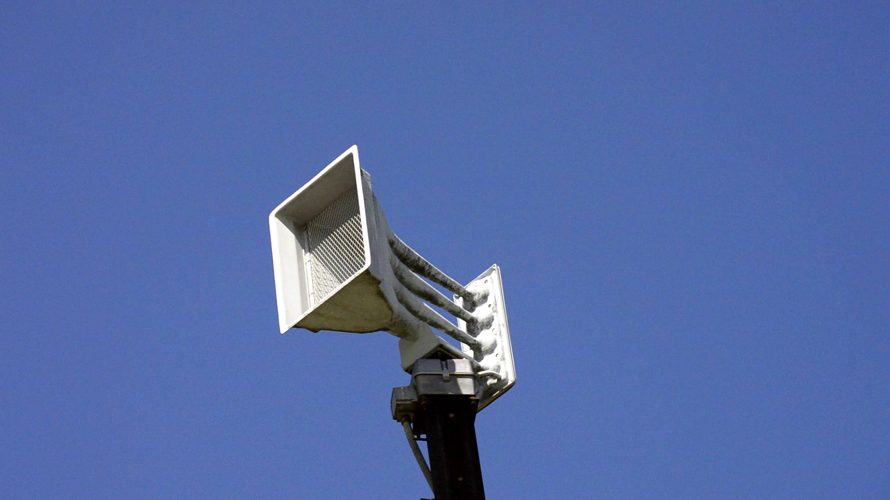

Whelen WPS-4004

This Whelen WPS-4004 is located at S 214th E Ave & E 46th St S.
GPS coordinates: 36.097273, -95.73782
This siren runs on a Digital ESC-2020, and peaks at 435 Hertz.
Siren Test Audio (4/5/2023):
Your browser does not support the audio element.